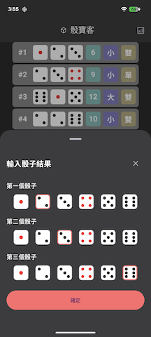
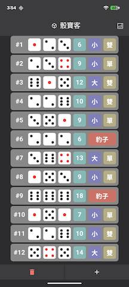
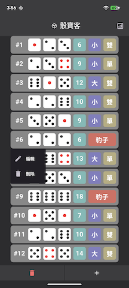
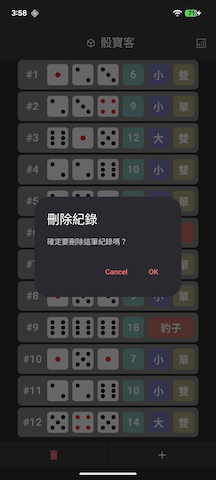
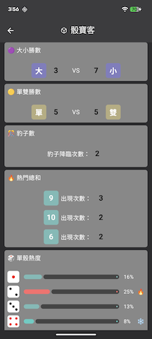

新手教學
詳細的操作指南，幫助您快速上手骰寶客
1
新增記錄
開啟應用程式後，您會看到記錄頁面。點擊右下角的 「+」按鈕 開始新增一局記錄。
在彈出的對話框中，選擇三顆骰子的點數（1-6），然後點擊「確認」即可新增記錄。
- 點選骰子圖示來選擇點數
- 三顆骰子都選擇後，點擊「確認」
- 新記錄會立即顯示在列表最下方

2
瀏覽記錄
所有記錄會以列表形式顯示在記錄頁面中。每筆記錄包含：
- 骰子點數：三顆骰子的實際點數
- 總和：三顆骰子點數加總（3-18）
- 大/小：總和 11-18 為大，3-10 為小
- 單/雙：依總和奇偶決定
- 豹子：三顆骰子點數相同時顯示

3
修改記錄
如果輸入錯誤，您可以輕鬆修改記錄：
- 在記錄列表中找到要修改的記錄
- 長按該記錄並選擇編輯
- 重新選擇正確的骰子點數
- 點擊「確認」儲存修改

4
刪除記錄
要刪除記錄，操作方式與修改記錄相同：
- 在記錄列表中找到要刪除的記錄
- 長按該記錄並選擇刪除
- 確認刪除後，記錄會被永久移除
注意：刪除後無法復原，請謹慎操作。

5
查看分析
切換到「分析」頁面，可以查看詳細的統計數據：
- 大小統計：大、小出現的次數與比例
- 單雙統計：單、雙出現的次數與比例
- 豹子統計：豹子出現的次數
- 點數分布：各點數總和的出現頻率
這些數據可以幫助您分析遊戲趨勢，做出更好的判斷。

小提示
- 💡 所有資料都儲存在本地裝置，不會上傳到任何伺服器
- 💡 記錄上限為 1000 筆，超過後最舊的記錄會自動刪除